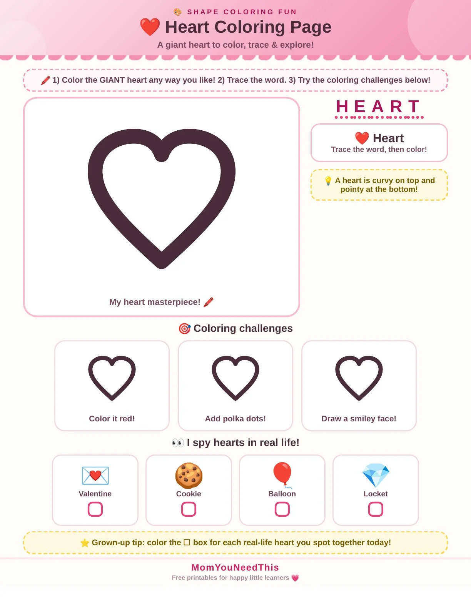
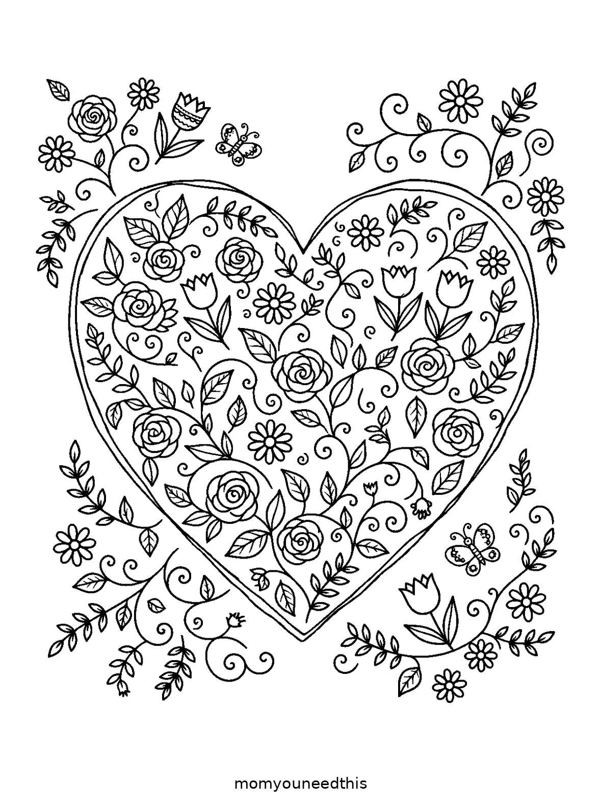
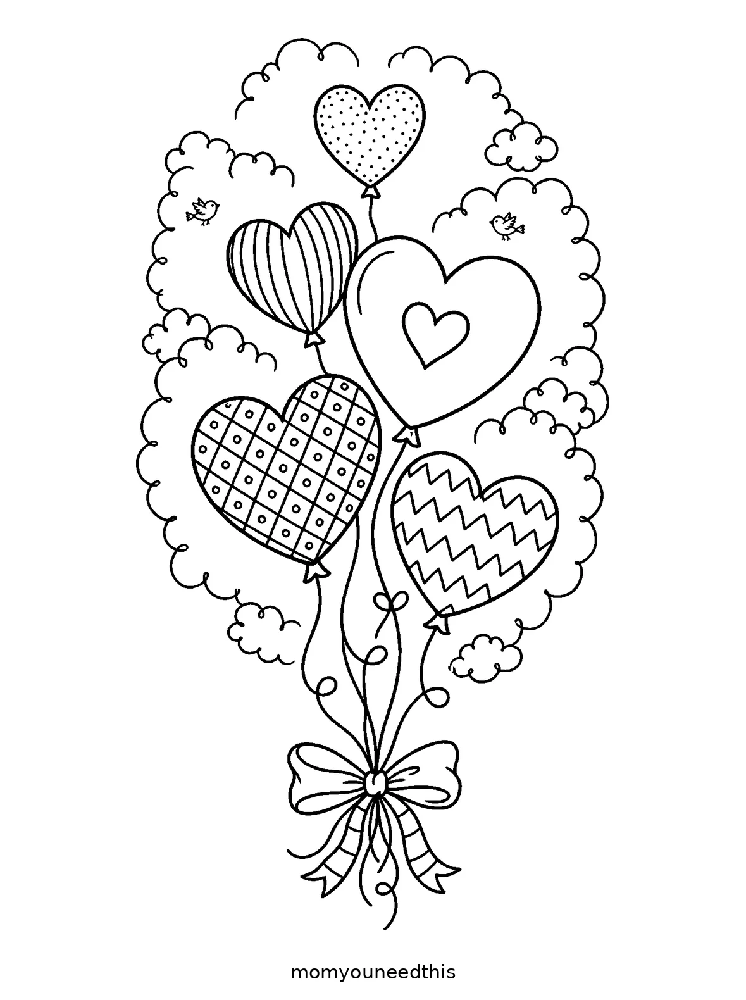
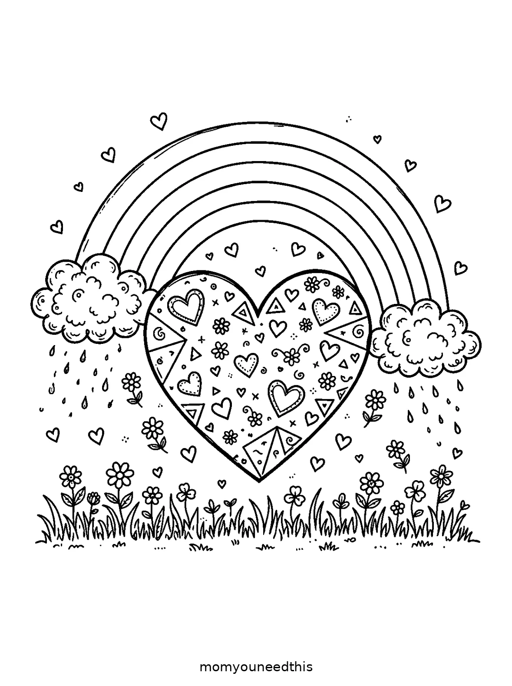

Heart Coloring Pages For Kids Color Sweet Heart Shapes
Sweet and curvy! Hearts are the shape of love, and kids adore coloring them. These heart coloring pages feature big bold hearts — perfect for little hands and big feelings.
Quick Answer
These free heart coloring pages give toddlers and preschoolers sweet heart shapes to color and decorate. Big bold hearts in playful designs make shape practice feel like a celebration. Download and print at home with no signup needed. Coloring hearts builds curved-line control and fine motor skills while children learn one of the most loved shapes of all.
At a Glance
- Ages: Toddlers and preschoolers
- Activity: Coloring and decorating big heart shapes
- Skills: Coloring control and shape practice
- Format: Printable coloring pages (PDF)
- Cost: Free, no signup
❤️ All About the Heart
A heart shape has two round bumps on top that meet in a point at the bottom. Kids can spot hearts on Valentine's cards, stickers, candy, and jewelry. Coloring hearts practices smooth curved lines.

🖨️ Download Your Free Heart Coloring Pages
Lovely heart designs ready to color! Print them out, grab the crayons — no signup needed.
⬇️ Download Free Printable 🖨️ Print(opens in new tab)🎁 Free printable for toddlers & preschoolers

🖨️ Download Your Free Floral Heart Coloring Page
A heart full of roses, tulips and twirly vines to color! Print it out, grab the crayons — no signup needed.
⬇️ Download Free Printable 🖨️ Print(opens in new tab)🎁 Free printable for toddlers & preschoolers

🖨️ Download Your Free Heart Balloons Coloring Page
Five heart balloons floating up to the clouds, tied with a big bow! Print it out, grab the crayons — no signup needed.
⬇️ Download Free Printable 🖨️ Print(opens in new tab)🎁 Free printable for toddlers & preschoolers

🖨️ Download Your Free Heart and Rainbow Coloring Page
A big patterned heart under a rainbow with rain clouds and flowers! Print it out, grab the crayons — no signup needed.
⬇️ Download Free Printable 🖨️ Print(opens in new tab)🎁 Free printable for toddlers & preschoolers
Printing Tips for Heart Coloring Pages
Print the heart pages on regular letter-size paper for crayons, or on cardstock when a finished heart will become a card — the thicker paper stands up to folding and glue.
Print the patterned floral heart at full size (100%) so its roses and vines keep their detail, and give older kids fine-tip markers for that sheet. Chunky crayons are the better pick for the big simple hearts and for little hands.
🔍 Heart Hunt Around Your Home
Find the hearts! Look on greeting cards, stickers, jewelry, and candy wrappers. Who can find the most hearts? Color one for someone you love!
💡 Why Color Hearts?
Hearts combine curves and a point, giving children practice with two line types in one shape. Plus, heart coloring naturally leads to sweet moments — kids love giving their finished hearts to family members.
Hearts for Every Occasion
Valentine's Day is not the only day that calls for a heart. A coloured heart makes an easy card for almost any occasion — fold a finished page in half and it is ready to give.
Try hearts for Mother's Day cards, birthday cards for grandparents, thank-you notes for teachers, and get-well wishes for a friend who is feeling sick. The big simple hearts suit a quick card, while the floral heart makes a prettier one to frame or send.
📚 Keep Exploring Shapes
Discover more free shape activities, printables, and learning ideas created for busy parents.
🎁 Back to Shape Coloring Pages